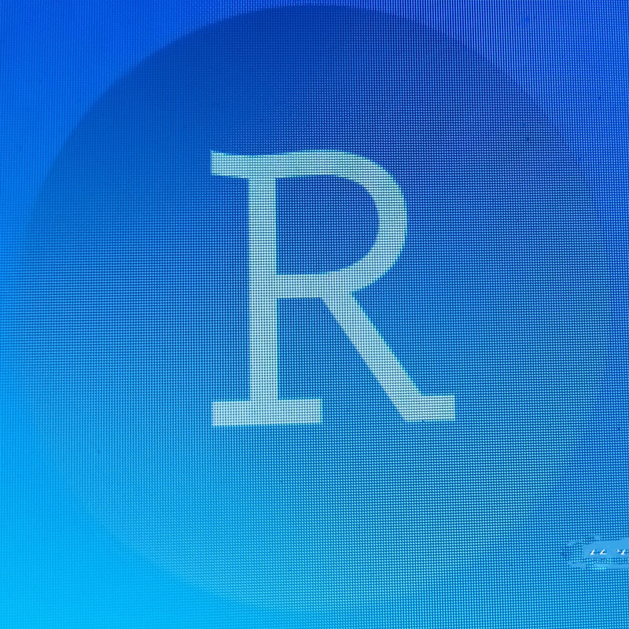

flowchart LR
A[(Import)] --> B[Tidy]
B --> C(Transform)
C --> D(Visualize)
C --> E(Model)
D --> F{Communicate}
E --> F
F --> G[/HTML/]
F --> H[/PDF/]
F --> I[/WORD/]
I might be correct if i say you have heard about R programming language as well as many good tips concerning R experience but i want to share with you some other interesting part of R, Another good news for beginners in R language is that, in your progress toward mastering R, you will get a wonderful experience, Imagine the simplicity of preparing a single document on R editor, yet allows you to share it in multiple format such as Pdf, Word or html. Yet with R it is not an imaginations it is what it is. And good example is this post you are reading it’s also the product of R.

In almost every book i read concerning R Programming, they all make you courageous and ambitious, well that is what exactly the authors want you be, so that you might start with hope. Although it is good to read, especially when you love to, in my personal experience i think is also good to have a Mentor rather than relying on Roll model(s) alone.
I am not discouraging one from rely and spend time in books, no!, but what i am trying to advice is that, through reading or searching online contents you can find best solutions, but for beginners in R Programming Language, it is better to have someone who can take you through obstacles, someone who can spend sometimes with you, introducing obvious expected challenges and prepare you to tackle them.
A Mentor is a person well equipped/advanced in respect of this topic (with R knowledge) a person either present in your environment or who you can have direct access to find in case you get stack or need more technique in your learning process.
On the other hand a Roll model is a person well equipped/advanced in R knowledge but the only help you can get from him/her is information through their writings or documentaries, though they may be usefully but also they may not solve all of your quick concerns.
To get started with R programming language, you must firstly install R and Rstudio on your computer, You might wonder, What is R and Rstudio?. Well R is a programming language and Rstudio is a working platform where you find working environment, but together provides you a great experience.
After the installation of R and RStudio, then you will nee to install packages which support R and RStudio to work/function. These packages provide functions which will be required in performance of your daily activities. So once you have installed All necessary packages, come automatically with their the functions.
To download R, go to CRAN, the comprehensive R archive network. CRAN is composed of a set of mirror servers distributed around the world and is used to distribute R and R packages. Don’t try and pick a mirror that’s close to you: instead use the cloud mirror, https:// cloud.r-project.org, which automatically figures it out for you.
A new major version of R comes out once a year, and there are 2–3 minor releases each year. It’s a good idea to update regularly. Upgrading can be a bit of a hassle, especially for major versions, which require you to re install all your packages, but putting it off only makes it worse.
RStudio is an integrated development environment, or IDE, for R programming. Download and install it from http://WWW.rstudio.com/download.

In R, as i have explained here above, packages are very fundamental instrument, therefor you need to install all the necessary packages before getting further. One main package is (“tidyverse”). tidyverse is an ecosystem of packages that focus on data entry, data manipulation, data modelling, data visualization(plot) and sharing of finding/insight derived from data analysis.
Install tidyverse through this command and any other packages as you will find fit for your own focused area.
[ install.packages("tidyverse") ]Packages in the tidyverse change fairly frequently. You can see if updates are available, and optionally install them, by running tidy verse_update().
Data science is a huge field, and there’s no way you can master it by reading a single book, so as i explained above it is more helpful if you get a mentor to lead you through obstacles. Also is an exciting knowledge that allows you to turn raw data into understanding, insight, and knowledge. The goal of R for Data Science is to help you to learn the most important tools in R that will allow you to do data science.
First you must import your data into R. This means that you take data stored in a file, database, or web API, and load it into a data frame in R first. If you can’t put your data into R, you can’t do data science on it!.
Once you’ve imported your data, it is required to tidy your data. Tidying your data means storing it in a consistent form that matches the semantics of the data set with the way it is stored. In brief, when your data is tidy, each column is a variable, and each row is an observation. Tidy data is important because the consistent structure allows you to focus your struggle on questions about the data, and not fighting the data into the right form for different functions.
Once you have tidy data, a first step is to transform it. Transformation includes narrowing in on observations of interest eg.(all people in one city, or all data from the last year), creating new variables that are functions of existing variables Together, tidying and transforming are called wrangling, this is because, getting your data in a form that’s natural to work with often, it usually feels like a fight!.
Once you have tidy your data with the variables you need, there are two main engines of knowledge generation: visualization and modeling. These have complementary strengths and weaknesses, so any real analysis will iterate between them many times.
Visualization is a fundamentally human activity. A good visualization will show you things that you did not expect, or raise new questions about the data. A good visualization might also hint that you’re asking the wrong question, or you need to collect different data. Visualizations can surprise you, because they require a human to interpret them.
Models are complementary tools to visualization. Once you have made your questions sufficiently precise, you can use a model to answer them. Models are a fundamentally mathematical or computational tool, so they generally scale well. Even when they don’t, every model can make assumptions, and by its very nature a model cannot question its own assumptions. That means a model cannot fundamentally surprise you.
The last step of data science is communication, an absolutely critical part of any data analysis project. It doesn’t matter how well your models and visualization have led you to understand the data unless you can also communicate your results to others.
flowchart LR
A[(Import)] --> B[Tidy]
B --> C(Transform)
C --> D(Visualize)
C --> E(Model)
D --> F{Communicate}
E --> F
F --> G[/HTML/]
F --> H[/PDF/]
F --> I[/WORD/]
Like any other game or language, in order to perform or being grammatical correct you have to apply the correct verb for a particular tense. As well as correct action for a specific environment. The same applies to R programming language, for the better result of your data analysis you have to apply the correct package for a specific task, every package contains functions in which there are verbs that act to perform a particular task.
This will provides an introduction to data science and the R programming language. The goal here is to get your hands dirty right from the start!, We will walk through an entire data analysis, and along the way introduce different types of data analysis question, some fundamental programming concepts in R, and the basics of loading, cleaning, and visualizing data. we will dig into each of these steps in much more detail.
Introduction
Visualization is an important tool for insight generation, but it is rare that you get the data in exactly the right form you need. Often you’ll need to create some new variables or summaries, or maybe you just want to rename the variables or reorder the observations in order to make the data a little easier to work with. let’s focus on how to use the dplyr package, another core member of the tidyverse.
There are five key dplyr functions, which allow you to solve the vast majority of your data-manipulation challenges, These six functions, provide solutions for data manipulation.
VERBS
Filter is one of the verb in tidyverse which usually deals with rows(records) only in your data frame,the main thing it does is to pick observations by their volume depends on the result you intend to achieve. (==,>,<).
Select is one of the verb in tidyverse which usually deals with coll um (variables) only in your table data frame,what it does is to select the variables by their names depends on the result you intend to achieve.(=).
Arrange is one of the verb in tidyverse which usually Reorder the rows(Records) of your data frame to allow you get result you intend.
Summarize is one of the verb in tidyverse which Collapse many values down to a single summary
Group by is one of the verb in tidyverse used in changes of the scope of each function from operating on the entire data frame to operating on it group-by-group.
Mutate is one of the verb in tidyverse Create new variables with functions of existing variables.
NOTE: All data frame contain Row and Column, therefore rows have to contains Records in it, while column have to contain variables in it (names). to successfully implement the above said verbs, you will have to ensure the following..
firstly you will have to be very clear on What kind of result you need, this depends on the questions.
Secondly is to understand data provided before importing it to R, for analysis. (To peruse them and see if they are tidy data or messy data).
Thirdly if they are tidy, and you have already understand a question, then you need to know which kind of verb you can use to get the result. but if data are messy, then you will need to tidy them before importation or if already imported then require tidying before further steps.
“Happy families are all alike; every unhappy family is unhappy in its own way.” ––- Leo Tolstoy
“Tidy data sets are all alike, but every messy data set is messy in its own way.” ––- Hadley Wickham
Shortly we have several types of data type….
Abbreviation
R provides the standard suite: >, >=, <, <=, != (not equal), and == (equal). When you’re new in R, the easiest mistake to make is to use = instead of == when testing for equality.
require(tidyverse)Loading required package: tidyverse-- Attaching core tidyverse packages ------------------------ tidyverse 2.0.0 --
v dplyr 1.1.0 v readr 2.1.4
v forcats 1.0.0 v stringr 1.5.0
v ggplot2 3.4.1 v tibble 3.1.8
v lubridate 1.9.2 v tidyr 1.3.0
v purrr 1.0.1
-- Conflicts ------------------------------------------ tidyverse_conflicts() --
x dplyr::filter() masks stats::filter()
x dplyr::lag() masks stats::lag()
i Use the conflicted package (<http://conflicted.r-lib.org/>) to force all conflicts to become errorsrequire(lubridate)
require(dplyr)
require(lubridate)
require(readxl)Loading required package: readxlrequire(janitor)Loading required package: janitor
Attaching package: 'janitor'
The following objects are masked from 'package:stats':
chisq.test, fisher.testrequire(magrittr)Loading required package: magrittr
Attaching package: 'magrittr'
The following object is masked from 'package:purrr':
set_names
The following object is masked from 'package:tidyr':
extractrequire(readr)lets try a to create a vector of 5 kids, include their names, age, food habit, and birth date. by doing this activity, we shall cover all five types of data, which are…
names = c("grace", "daniel", "collins", "ethan", "benjunior")
names[1] "grace" "daniel" "collins" "ethan" "benjunior"lets test if our vector is character
is.character(names); is.vector(names); is.factor(names);class(names)[1] TRUE[1] TRUE[1] FALSE[1] "character"names[2:5][1] "daniel" "collins" "ethan" "benjunior"food = c(1,2,3,4,5)
food[1] 1 2 3 4 5lets test if our food is integer vector
is.integer(food); is.vector(food); is.character(food); is.numeric(food); is.factor(food)[1] FALSE[1] TRUE[1] FALSE[1] TRUE[1] FALSEnow as we may see our results, show that our integer vector is FALSE, and Numeric is TRUE, then we have to change from numeric to integer. You may wonder why our integer resulted to numeric while we had created an integer vector?. well the reason is that in R, most of its understanding (default) data is Numeric, therefor is so obvious to find same result over and over.
food = as.integer(food)
food[1] 1 2 3 4 5is.integer(food)[1] TRUEage = c(11.5, 5.2, 5.3, 3.2, 1.2)
age[1] 11.5 5.2 5.3 3.2 1.2let’s test our numeric vector
is.numeric(age); is.integer(age); is.character(age); class(age)[1] TRUE[1] FALSE[1] FALSE[1] "numeric"gender = c("female", "male", "male", "male", "male")
gender[1] "female" "male" "male" "male" "male" let’s test is our vector factor?
class(gender); is.integer(gender); is.numeric(gender); is.factor("gender")[1] "character"[1] FALSE[1] FALSE[1] FALSEAgain as we can see the above result, our factor has appeared as character while we created a factor class, so let’s convert it to factor. Do not stress your self with that default when happen.
gender = as.factor(gender)
gender[1] female male male male male
Levels: female maleclass(gender); is.integer(gender); is.factor(gender); is.character(gender)[1] "factor"[1] FALSE[1] TRUE[1] FALSElevels(gender)[1] "female" "male" birth = c(dmy(01022011), dmy(01062017), dmy(01052017), dmy(01062019), dmy(01062021))
birth[1] "2011-02-01" "2017-06-01" "2017-05-01" "2019-06-01" "2021-06-01"As we can see our date vector shows date, month and year, now let’s test it.
class(birth); is.integer(birth);is.numeric(birth);is.Date(birth);is.vector(birth)[1] "Date"[1] FALSE[1] FALSE[1] TRUE[1] FALSEseq(0:100) [1] 1 2 3 4 5 6 7 8 9 10 11 12 13 14 15 16 17 18
[19] 19 20 21 22 23 24 25 26 27 28 29 30 31 32 33 34 35 36
[37] 37 38 39 40 41 42 43 44 45 46 47 48 49 50 51 52 53 54
[55] 55 56 57 58 59 60 61 62 63 64 65 66 67 68 69 70 71 72
[73] 73 74 75 76 77 78 79 80 81 82 83 84 85 86 87 88 89 90
[91] 91 92 93 94 95 96 97 98 99 100 101number = seq(from = 0, to = 100, by = 2)
number [1] 0 2 4 6 8 10 12 14 16 18 20 22 24 26 28 30 32 34 36
[20] 38 40 42 44 46 48 50 52 54 56 58 60 62 64 66 68 70 72 74
[39] 76 78 80 82 84 86 88 90 92 94 96 98 100length(number)[1] 51number[51][1] 100rep(names,each = 3) [1] "grace" "grace" "grace" "daniel" "daniel" "daniel"
[7] "collins" "collins" "collins" "ethan" "ethan" "ethan"
[13] "benjunior" "benjunior" "benjunior"rep(names,times = 3) [1] "grace" "daniel" "collins" "ethan" "benjunior" "grace"
[7] "daniel" "collins" "ethan" "benjunior" "grace" "daniel"
[13] "collins" "ethan" "benjunior"names [6] = "amani"
names[1] "grace" "daniel" "collins" "ethan" "benjunior" "amani" names = names[1:5]
names[1] "grace" "daniel" "collins" "ethan" "benjunior"length(names); length(food); length(age); length(birth)[1] 5[1] 5[1] 5[1] 5Now that we have created our vector. Let us see how we turn our vector to data frame. We shall use the function data.frame(), then we put our vectors within the function.
data.frame(names, birth, age, food, gender ) names birth age food gender
1 grace 2011-02-01 11.5 1 female
2 daniel 2017-06-01 5.2 2 male
3 collins 2017-05-01 5.3 3 male
4 ethan 2019-06-01 3.2 4 male
5 benjunior 2021-06-01 1.2 5 malewatoto = data.frame(names, birth, age, food, gender)
watoto names birth age food gender
1 grace 2011-02-01 11.5 1 female
2 daniel 2017-06-01 5.2 2 male
3 collins 2017-05-01 5.3 3 male
4 ethan 2019-06-01 3.2 4 male
5 benjunior 2021-06-01 1.2 5 maleVERBS
watoto %>% filter(gender == "male") names birth age food gender
1 daniel 2017-06-01 5.2 2 male
2 collins 2017-05-01 5.3 3 male
3 ethan 2019-06-01 3.2 4 male
4 benjunior 2021-06-01 1.2 5 malewatoto %>% filter(birth == dmy(01022011) | birth == dmy(01062019)) names birth age food gender
1 grace 2011-02-01 11.5 1 female
2 ethan 2019-06-01 3.2 4 malewatoto %>% filter(birth == dmy(01022011) & gender == "female") names birth age food gender
1 grace 2011-02-01 11.5 1 femalewatoto %>% select(names,gender) names gender
1 grace female
2 daniel male
3 collins male
4 ethan male
5 benjunior malewatoto %>% select(1:4) names birth age food
1 grace 2011-02-01 11.5 1
2 daniel 2017-06-01 5.2 2
3 collins 2017-05-01 5.3 3
4 ethan 2019-06-01 3.2 4
5 benjunior 2021-06-01 1.2 5watoto %>% arrange(watoto) names birth age food gender
1 benjunior 2021-06-01 1.2 5 male
2 collins 2017-05-01 5.3 3 male
3 daniel 2017-06-01 5.2 2 male
4 ethan 2019-06-01 3.2 4 male
5 grace 2011-02-01 11.5 1 femalewatoto %>% arrange(desc(food)) names birth age food gender
1 benjunior 2021-06-01 1.2 5 male
2 ethan 2019-06-01 3.2 4 male
3 collins 2017-05-01 5.3 3 male
4 daniel 2017-06-01 5.2 2 male
5 grace 2011-02-01 11.5 1 femalewatoto %>% mutate(sport = c("footbal", "footbal","voleybal", "basketbal", "netbal")) names birth age food gender sport
1 grace 2011-02-01 11.5 1 female footbal
2 daniel 2017-06-01 5.2 2 male footbal
3 collins 2017-05-01 5.3 3 male voleybal
4 ethan 2019-06-01 3.2 4 male basketbal
5 benjunior 2021-06-01 1.2 5 male netbalAs we have seen in the beginning of this book,in order to do activities in R,you need data, without data R is like meaningless application in your computer.So since data work as a fuel in R, step one you need to know how to import data into it. Data importation in R reefers to the process of calling your data from the directory (file) in your computer into the R studio where you intend to do your analysis.
You have to know what kind of data you have before importing it in R. Data are usually in different extension, so you have to ensure you put your data in the right extension in your local directory. Eg. xls, csv etc…….
On your computer open R studio, programming is usually done on console. But in the bellow demo i will work on the editor.
Procedures.
My data names is (Tamisemi Primary Enrollment by Age and Sex,2021.xls”). So open a chunk then within a chunk call a required package then run the chunk. Then Open another chunk then within the chunk call your data from your local/external directory. Example, If your data are in Excel or csv extension, so i will use the package (tidyverse, read_excel and read_csv).
how do we call our data from our directory?
read_csv("e:/Mystafs/blogswebsite/teneson/posts/R-introduction/BUDGET DAUDI HEALTH CENTRE 2022.csv")New names:
Rows: 18 Columns: 11
-- Column specification
-------------------------------------------------------- Delimiter: "," chr
(6): TARGET, ACTIVITY, GSF CODE, Unit of measure, TOTAL, Source of Fund dbl
(2): Quantity, frequencer num (2): unit price, ...11 lgl (1): ...10
i Use `spec()` to retrieve the full column specification for this data. i
Specify the column types or set `show_col_types = FALSE` to quiet this message.
* `` -> `...10`
* `` -> `...11`# A tibble: 18 x 11
TARGET ACTIV~1 GSF C~2 Unit ~3 Quant~4 frequ~5 unit ~6 TOTAL Sourc~7 ...10
<chr> <chr> <chr> <chr> <dbl> <dbl> <dbl> <chr> <chr> <lgl>
1 Shortage~ To sup~ Medica~ Kits 6 5 1.27e4 380,~ OC NA
2 <NA> <NA> Drugs ~ Kits 6 5 4.23e4 1,26~ <NA> NA
3 <NA> <NA> Hospit~ Kits 6 5 8.45e3 253,~ <NA> NA
4 <NA> <NA> PPMof ~ Kits 6 5 4.23e3 126,~ <NA> NA
5 <NA> <NA> Dental~ Kits 6 5 8.45e3 253,~ <NA> NA
6 <NA> <NA> Labora~ Kits 6 5 8.45e3 253,~ <NA> NA
7 <NA> <NA> <NA> <NA> NA NA NA 2,53~ <NA> NA
8 <NA> To sup~ wire metre 1 1 1.31e6 1309~ <NA> NA
9 Organiza~ To pro~ extra ~ Person 0 1 1.65e5 - OC NA
10 <NA> <NA> Leave ~ Person 3 1 1.2 e5 360,~ <NA> NA
11 <NA> <NA> Medica~ Person 2 4 1 e5 800,~ <NA> NA
12 <NA> <NA> Unifor~ Person 2 1 1.2 e5 240,~ <NA> NA
13 <NA> <NA> Burial~ Person 2 1 1 e6 2000~ <NA> NA
14 <NA> <NA> Statio~ Each 0 4 1.61e4 0 <NA> NA
15 <NA> <NA> <NA> <NA> NA NA NA 3,40~ <NA> NA
16 <NA> <NA> <NA> <NA> NA NA NA 7,24~ <NA> NA
17 <NA> <NA> <NA> <NA> NA NA NA <NA> <NA> NA
18 <NA> <NA> <NA> <NA> NA NA NA - <NA> NA
# ... with 1 more variable: ...11 <dbl>, and abbreviated variable names
# 1: ACTIVITY, 2: `GSF CODE`, 3: `Unit of measure`, 4: Quantity,
# 5: frequencer, 6: `unit price`, 7: `Source of Fund`the above data frame are showing the importation of data from your directory into R, using csv extension.
read_xlsx("e:/Mystafs/blogswebsite/teneson/posts/R-introduction/BUDGET DAUDI HEALTH CENTRE 2022.xlsx")New names:
* `` -> `...10`# A tibble: 32 x 10
TARGET ACTIV~1 GSF C~2 Unit ~3 Quant~4 frequ~5 unit ~6 TOTAL Sourc~7 ...10
<chr> <chr> <chr> <chr> <dbl> <dbl> <dbl> <dbl> <chr> <dbl>
1 Shortag~ To sup~ Medica~ Kits 6 5 52500 1.58e6 USER F~ NA
2 <NA> <NA> Drugs ~ Kits 6 5 175000 5.25e6 <NA> NA
3 <NA> <NA> Hospit~ Kits 6 5 35000 1.05e6 <NA> NA
4 <NA> <NA> PPMof ~ Kits 6 5 50000 5.25e5 <NA> NA
5 <NA> <NA> Dental~ Kits 6 5 35000 1.05e6 <NA> NA
6 <NA> <NA> Labora~ Kits 6 5 35000 1.05e6 <NA> NA
7 <NA> <NA> <NA> <NA> NA NA NA 1.05e7 <NA> NA
8 Organiz~ To pro~ Water ~ bills 64 12 2500 1.92e6 USER F~ NA
9 <NA> <NA> Electr~ bills 1200 6 400 2.88e6 <NA> NA
10 <NA> <NA> Per di~ person 5 5 80000 2 e6 <NA> NA
# ... with 22 more rows, and abbreviated variable names 1: ACTIVITY,
# 2: `GSF CODE`, 3: `Unit of measure`, 4: Quantity, 5: frequencer,
# 6: `unit price`, 7: `Source of Fund`the above tables are showing the importation of data from your directory into R, using Xlsx extension.
To this stage it’s so clear that we have gain an insight on how to get started with R language and data importation ready to manipulate them and find results. So in next post we shall over see how we manipulate with data and lead us to final results. The next post is the continuation of our lesson, where we will cover both data manipulation and statistics.
Related post.
If you enjoyed this post, then don't miss out on any future posts by subscribing to my email newsletter